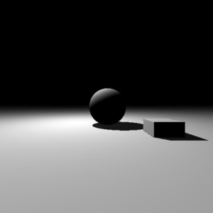
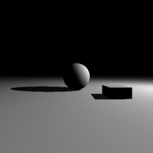
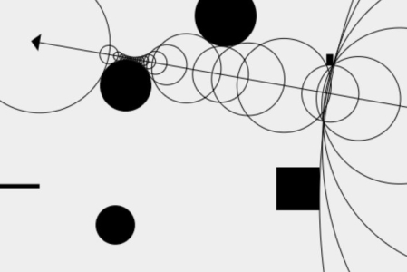
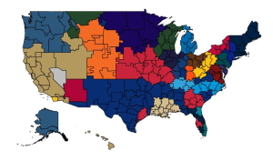
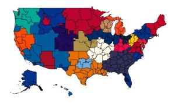
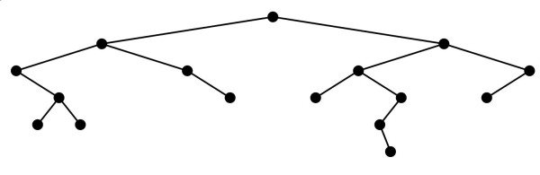
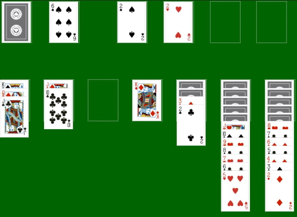

Projects
3D Ray Marching


I used ray marching and signed distance functions to draw a scene onto an HTML canvas using JavaScript.
The scene is lit using diffuse lighting and includes shadows. I implemented signed distance
functions for a sphere, a box, and a plane. The lightsource rotates slowly around the scene,
but with three objects, the scene runs very slowly.
2D Ray Marching Visualization

Before rendering a full 3D scene using ray marching, I created a 2D visualization of sphere tracing.
The canvas displays the circles that represent the ray marching steps leaving the "camera". The
"camera" turns red when it detects a collision.Left and right arrow keys rotate the "camera" and the up and down arrow keys move the "camera" forward and back. Clicking on the scene adds a random shape to the scene.
Crossword Maker
Mapping Google Trends


Google Trends limits the number of comparisons to 5 search terms. I wanted to make a visualization of sports teams based on
Google search popularity, so I used Python and the Pytrends API to compare all teams in a league to each other.
I used this project to create maps of NFL, NBA, NHL, MLB, and MLS teams in the United States.
Binary Tree Signatures

This project creates a visualization of binary trees. Every binary tree has a unique signature created by a pre-order traversal.
Each node is represented by two decimals. The first digit represents a left child and the second represents the right child. for
example, 01 represents a node with a right child, but no left child.Trees can be constructed by clicking on the nodes or by entering a valid binary tree signature in either decimal or binary representation.
Solitaire AI

This project was created after seeing that a skilled solitaire player wins around 43% of games. I attempted to see what percentage
of games of solitaire a simple AI could win. The AI I created is capable of winning games, but it is no where near a 43% win rate.
Instagram Bot
After seeing that the Instagram API would be deprecated in 2020, I decided to use Python and Selenium to create an Instagram bot that analyzes the likes on recent Instagram posts. It looks at the previous four posts and collects the lists of likes for each photo. It then looks at the most recent post and displays likes from people who did not like many of the previous posts, and people who liked many of the previous posts, but not the most recent one.